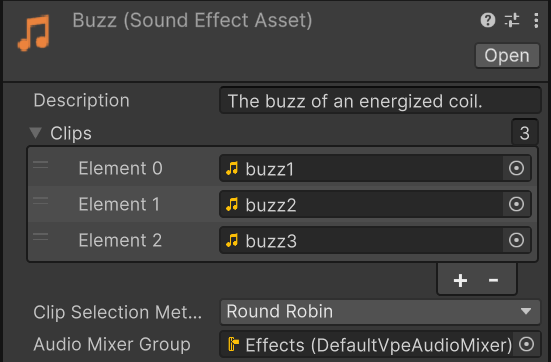
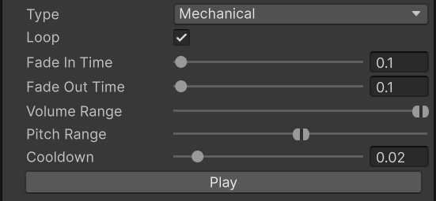
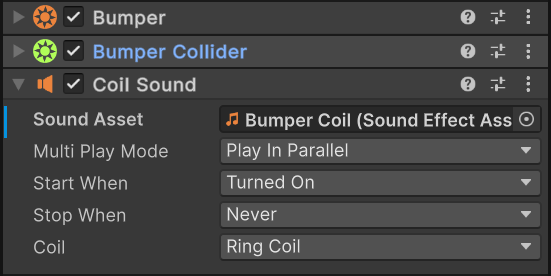

Sound
Unity, the game engine VPE is built on top of, provides many useful audio features out of the box. It can import and play several common audio file formats, it supports directional audio and surround sound and provides mixing and mastering functionality. For a comprehensive overview, refer to the Unity documentation. On top of this built-in functionality, VPE provides some features specific to pinball.
Preparing Sound Files
Before you can use a sound file in your VPE table, you must import it into Unity. This can be as simple as adding a file of a supported type (.aif, .wav, .mp3, .ogg) to your project folder, but there are a few things you should consider:
Encoding
No matter what format your file is on disk and no matter what settings you chose when exporting it, Unity will transcode and compress your audio file differently depending on the platform it runs on. This means you should prioritize audio quality over small file size when creating your files. The standard practice among Unity developers is to use uncompressed .wav files to avoid double compression and achieve the highest possible quality on any platform.
Channels
Use a single channel (mono audio) for any spatial sounds. For example, do not export the sound effect for your plunger with a louder right channel just because the plunger is on the right side of your playfield. Unity can dynamically change the volume per channel depending on the locations of the listener and the audio source. If you already have mechanical sound effects in stereo format, you can mix them down to mono in Unity's import settings. For anything that would come out of the speakers in a real pinball machine, such as music and callouts, you can use stereo sounds if you want.
Loudness
All your sound files should have a subjectively similar loudness relative to each other so you don't have to mess around with volume sliders in Unity just to equalize the volume. Any volume mixing you do in Unity should be done to make certain sounds louder than others, not the other way around. The overall loudness of your table should also be consistent with other VPE tables and other software in general so that players don't have to fiddle around with their volume controls every time they open your table.
Unity does not have the ability to normalize the loudness of your audio files, but the free audio editing software Audacity does:
- Import your file(s) into Audacity
- Press
Ctrl + Ato select all - In the toolbar at the top, select Effect -> Volume and Compression -> Loudness Normalization...
- Do not change the default settings (-23 LUFS) and click 'Apply'
- Press
Ctrl + Shift + Eto export
Sound Assets
After importing your a sound file into Unity, you get an Audio Clip. You could create an Audio Source in your scene and play this clip directly, but VPE allows you to construct different types of sound assets out of one or multiple of these audio clips to produce variation and customize how the sound is played with pinball in mind. VPE differentiates between sound effects, music and callouts.
To create a sound asset, navigate to the folder where you want to create it in your Unity project panel, right click, select Create -> Pinball -> Sound and choose the type of sound asset you want to create. All sound asset types have the following properties:
- Description: You can enter any text here. This field is only for diplay. Use it to describe the sound, when it should be used, how it was recorded, or just leave it blank.
- Clips: A list of audio clips that may be selected for playback. For frequently played sounds, such as that of a bumper, you should provide multiple samples here.
- Clip Selection Method: How VPE decides which clip to choose each time the
sound is played.
- Round Robin: The clips will be played first to last in a fixed order.
- Random: Clips are selected at random.
- Audio Mixer Group: The audio mixer group whose effects and settings will be applied to the sound asset when played. VPE comes with a default audio mixer group for each type of sound asset. This enables the VPE player application to provide global volume settings to end users across all tables. The default audio mixer is also responsible for reducing the volume of sound effects and music whenever a callout plays. Your table will lose these benefits if you use your own audio mixer groups.
Sound Effects
Sound effects are the most common type of sound asset. You should generally choose this type for any sounds other than callouts and music. In addition to those described above, sound effect assets have the following properties:
- Type: In a real pinball machine, would this sound come from a mechanism (Mechanical) or from the speakers (Synthetic)? When a mechanical sound effect is played, VPE uses Unity's spatial audio system to position it in the scene according to the object that triggered it.
- Loop: Causes the sound to loop until it is stopped according to table logic. When enabled, additional options for fading in and out are available.
- Volume Range and Pitch Range: Two sliders with two control knobs each that indicate a range within which volume and pitch will be randomized each time the sound is played. This is a cheap way to produce variation if only one audio clip is available, but it will not sound as good as multiple samples.
- Cooldown: If the sound effect is triggered again before the specified number of seconds passes, it will not be played. This is to prevent sound effects from playing twice at the same time, for example when the ball hits two drop targets at once.
Callouts
Callouts are short voice lines that are typically triggered when the player does something special, like starting multiball. The reason for the distinction between callouts and sound effects is that callouts tend to be much more significant to the player than other sounds. As such, their playback is managed by a table-wide Callout Coordinator component at the root of the table hierarchy that ensures callouts are played one at a time. When triggering a callout, you can select a priority. Whenever a callout is triggered while another is playing, it will be placed in a queue to be played later. New callouts will 'cut in line' in front of any lower priority callouts already in the queue. Callouts also have their own audio mixer group that lowers the volume of sound effects and music whenever a callout is played. (This is called "ducking" in audio technician lingo.)
Music
Like callouts, music is played indirectly through requests to a table-wide Music Coordinator at the root of the table hierarchy. This ensures your table never plays multiple tracks at once, so you don't have to worry about that in your game logic. Requests to the music coordinator are made with a priority. If multiple requests are active at the same time, the one with the highest priority will play. If multiple requests have the same priority, the most recent one is played. If a new track starts while another is playing, the music coordinator will cross-fade between them according to the Fade Duration setting on the music coordinator component. Music assets always loop: When an audio clip from a music asset finishes, the next clip is chosen according to the clip selection method specified in the asset. This allows you to build playlists using music assets.
Playback
Regardless of which game logic engine you use, VPE provides a few Unity components to trigger the playback of sound assets. Hit Sound, Coil Sound and Switch Sound are intended to trigger mechanical sound effects when the ball hits something, a coil is energized, or a switch is closed, respectively. You can add these components to any game objects that have another component to supply the appropriate events. For example, a bumper component supplies all three, because bumpers can get hit and have both a coil and a switch. If the coil or switch that should trigger the sound is part of a device with other coils or switches, you must select it in the drop-down menu on the sound component. You can have as many sound components on one object as you want. If you expect a sound to be triggered in quick succession, you may be interested in the Multi Play Mode setting. It specifies what to do when the sound is still playing when it is triggered again. These are the options:
- Play In Parallel: Keep playing the previous sound and start another one at the same time.
- Do Not Play: Keep playing the previous sound and don't start another one.
- Fade Out Previous: Fade out the previous sound while starting a new one. If the sound is not a looping sound or its fade out time is zero, this is the same as Stop Previous.
- Stop Previous: Immediately stop the previous sound and start a new one.
Any sound that would come out of the speakers in a real pinball machine should be driven by your game logic engine, but there is technically nothing stopping you from triggering music or a callout when a switch is closed, for example. Additionally, VPE provides the Music Requester and Callout Requester components for testing purposes. These components will trigger callouts and music as soon as they are enabled and cancel the request when they are disabled. To get some music playing as quickly as possible, simply add a music requester component to an enabled object in your table hierarchy and assign a reference to the music asset you want to play.